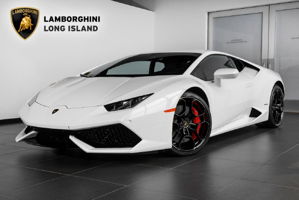

|
จะมีการผลิตเพียง 4,000 คันทั่วโลก (ลัมโบร์กีนี มูร์เซียลาโก จำนวน 4,099 คัน) โดยตัวถังทำจาก คาร์บอนไฟเบอร์ โมโนโคค( carbon-fibre monocoque ) ด้วยรูปทรงและลวดลายต่างนำมาจาก รุ่นจำกัดของลัมโบร์กีนี ได้แก่ เรเบนตัน และ รุ่นคอนเซปต์ เอสโทคโดยอะเวนตาโดร์ 1,000 คันแรก จะถูกผลิตให้เสร็จภายใน 15 เดือน |
|
ลัมโบร์กินี ฮูราแคน ซูเปอร์คาร์รุ่นใหม่ล่าสุด ที่มาสานต่อตำนานอันยอดเยี่ยมของ Lamborghini Gallardo ที่ออกแบบใหม่หมดจดพร้อมด้วยเทคโนโลยีภายในอันล้ำสมัยยิ่งกว่าเดิม ระบบขับเคลื่อนใช้เครื่องยนต์ V10 ขนาด 5,200 ซีซี ให้กำลัง 610 แรงม้า แรงบิด 560 นิวตันเมตร สามารถพารถทะยานด้วยความเร็วสูงสุด 325 กม./ชม. และทำความเร็วจาก 0-100 กม./ชม. ภายใน 3.2 วินาที และเร่งจาก 0-200 กม./ชม. ภายใน 9.9 วินาที ส่งกำลังผ่านเกียร์ดูอัลคลัช 7 สปีด พร้อมระบบขับเคลื่อนสี่ล้อควบคุมด้วยไฟฟ้า และโหมดการขับขี่ 3 แบบ ได้แก่ Strada, Sport และ Corsa ที่สามารถควบคุมสมรรถนะได้ทั้งเครื่องยนต์ เกียร์ ไปจนถึงช่วงล่างของรถ โดยมีราคาขายในประเทศไทยเริ่มต้นที่ 25,000,000 บาท |
|  |
ในที่นี้หมายถึงจำนวนตัวเลขอะตอมของคาร์บอน รุ่นนี้ใช้ คาร์บอน ไฟเบอร์ จำนวนมากในการผลิต มีแชสซี บอดี้ เพลาขับ และกันสะเทือน ทำจากคาร์บอน ไฟเบอร์ สามารถลดน้ำหนักประมาณ 2,202 ปอนด์ ทำให้น้ำหนักตัวเบาเหมือน Honda Fit Lamborghini Sesto Elemento เป็นรถน้ำหนักเบามากนับตั้งแต่ Lamborghini เคยผลิตมา ขับเคลื่อนด้วยเครื่องยนต์ V10 ขุมพลัง 570 แรงม้า เกียร์กึ่งอัตโนมัติ 6 สปีด ขับเคลื่อนแบบ AWD นับเป็นอีกรุ่นที่มีการผลิตจำนวนน้อยมาก เพียง 20 คัน |
 |